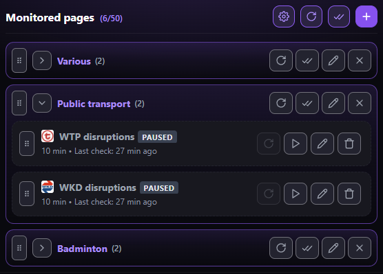
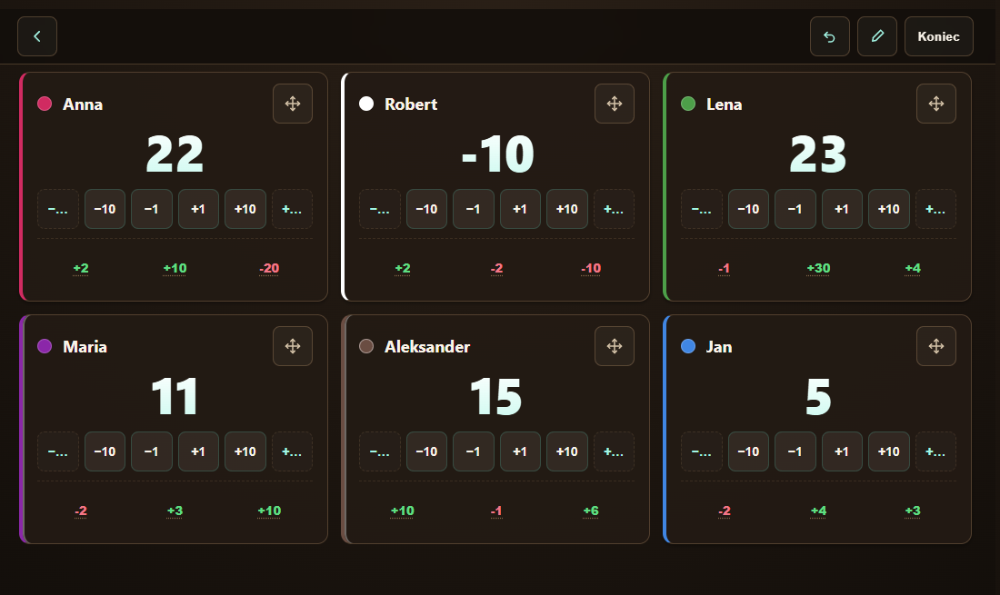
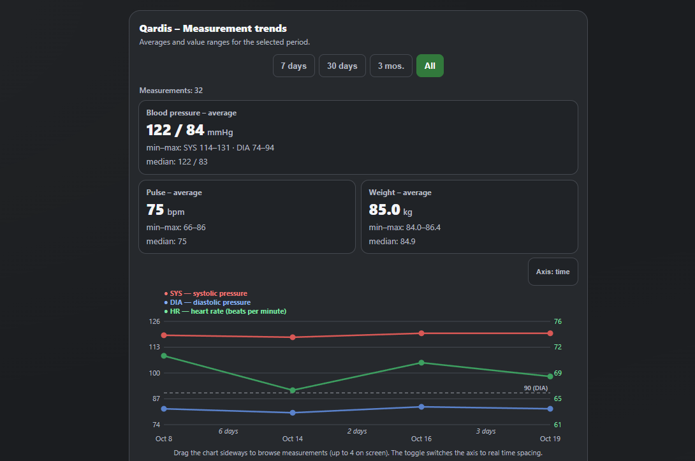
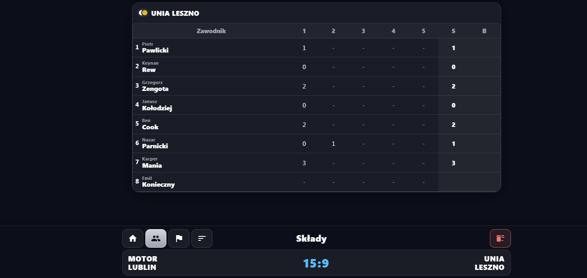

Web Page Change Monitor
Rozszerzenie do Brave, Opera, Chrome, Edge. Monitoruje strony pod kątem zmian. Bez kont, serwerów pośredniczących i telemetrii, a analiza odbywa się lokalnie.
Zobacz na GitHubie
Abax Tracker
Licznik punktów do gier planszowych z modułami — losowaniem pierwszego gracza, generatorem kości, pomiarem czasu partii itp.
Otwórz
Qardis
Dziennik ciśnienia, tętna i wagi z wykresami trendów. Eksport do PDF i CSV oraz kopia zapasowa.
Otwórz
Program żużlowy
Intuicyjny program żużlowy do wpisywania wyników biegów, czasów, zmian i wykluczeń. Obsługuje tabelę biegową Ekstraligi oraz zawodów indywidualnych (SGP, SEC, IMP).
Otwórz